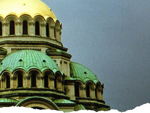

 image: eesti“I love early morning Sofia. ”
I love early morning Sofia. No hellish traffic, the people whom I meet know exactly where they are going. The familiar sight of bustling, hurrying people comes in the “later” hours of the morning.
That happened about ten years ago. I was a student and was going to my classes at the university, which started at 8 am. It so happened that I got to the Rectorate much earlier. With nothing else to do, I bought a cup of coffee from the van at the N280 bus stop and headed towards Saint Alexander Nevsky Cathedral, where there are many benches, besides the weather was fine.
And so, the place is the third bench on your left when you face the entry of the cathedral. It is May, a bit cold at 7.20 am. The ambience is kind of ghostly, because of the light fog, the domes of the Othodox Christian giant sticking out through it.
I was sipping slowly from the cup of unexpectedly strong coffee and drawing on yet another cigarette, bizarrely calm. That’s when I thought about the strength of this place. I am the least religious person you will ever find, but at that moment I felt as if I was in front of an altar without being in a church.
There was no need to think about anything, I did not even try, I was just enjoying the timelessness of the moment. The noise from the city was not yet getting to the third bench where I was and may be that was the reason why the toll of the bells shook me all over. I did not only hear the bells, I felt them with every inch of my body. There was something grand in that moment, at least this is how I felt it. All of a sudden I felt one complete whole with the majesty of the temple.
That was a weird feeling, I admit. Even now when I pass through that place I remember that moment and even feel a bit jealous of myself that I did manage to feel it.
referenced works
- The St. Alexander Nevsky Cathedral is a Bulgarian Orthodox church in Sofia that serves as the cathedral church of the Patriarch of Bulgaria. The construction of the cathedral started in 1904 and was finished in 1912. The main dome is 45 m high. Around the dome the Lord’s Prayer (“Otche Nash”) is written in fine letters of gold. The light fixtures in the cathedral were made in Munich. The church occupies an area of 3170 m² and can accommodate up to 5,000 worshippers inside, which makes it the second biggest cathedral on the Balkan Peninsula after the Temple of Saint Sava in Serbia. The bell tower is nearly 53 m high and has 12 bells with total weight of 23 tons. The smallest of the bells weighs 10 kilograms while the biggest is 12 tons. The temple was proclaimed a monument of culture in 1924. Some of the most beautiful Bulgarian icons are displayed in the cathedral crypt. The church was named after Russian saint Alexander Nevsky, who lived during the 13th century. The prince is said to be one of the most influential people in medieval Russia, contributing to the establishment of the Eastern Orthodox on a backdrop of strong catholic influence in Europe at the time. The holiday of the saint is celebrated on November 23. For a short period in 1916 the name of the cathedral was changed to St. Cyril and Methodius, as during the First World War Bulgaria and Russia supported different sides, but in 1920 the name of the temple was changed back to St. Alexander Nevsky. ↩
location information
- Name: a bench at Alexander Nevsky Square (the third on the left when you face the entrance)
- Address: Alexander Nevsky square
- Time of story: Morning
- Latitude: 42.697734
- Longitude: 23.333212
- Map: Google Maps

Write for Us!
We’re looking for short narratives describing pivotal moments of elation, confusion, absurdity, love or grief — or anything in between — inseparably tied to a specific place in Sofia.
Sofia:
Or receive updates by email
Addresses only used for the occational hitotoki mailing. Will not be sold to the crazy people on tram N22.
A list of all available RSS feeds is on the about page
commentary